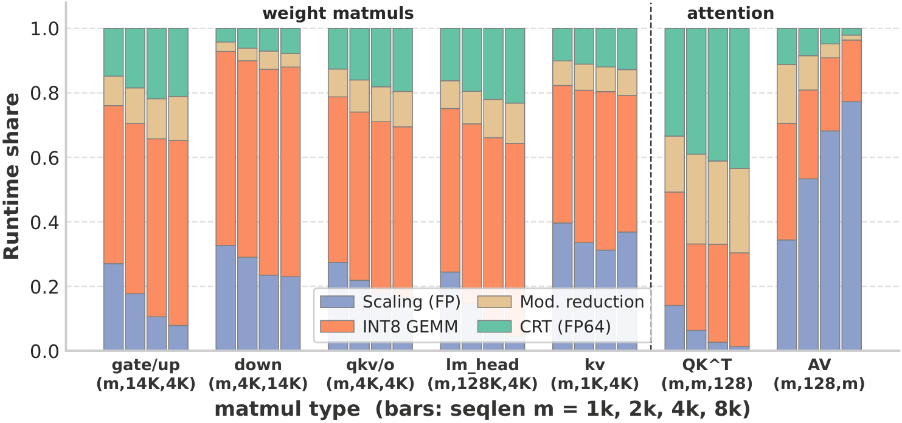
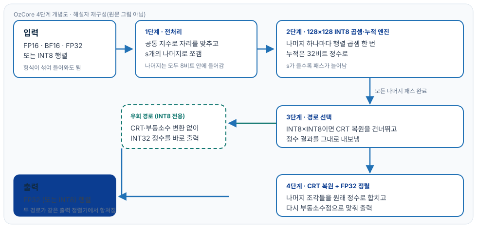
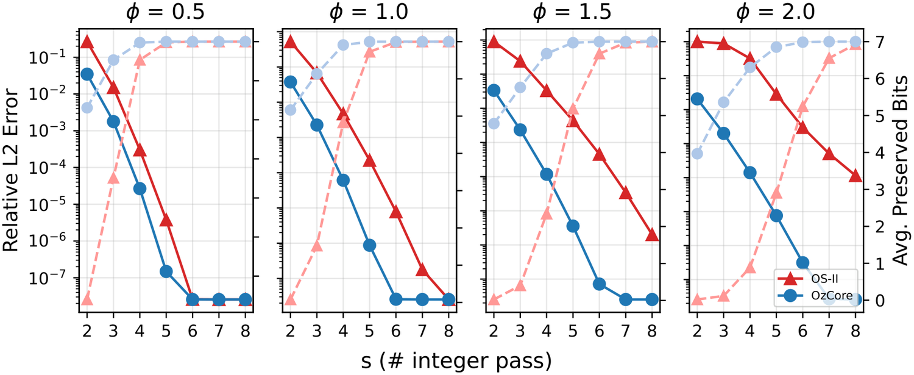
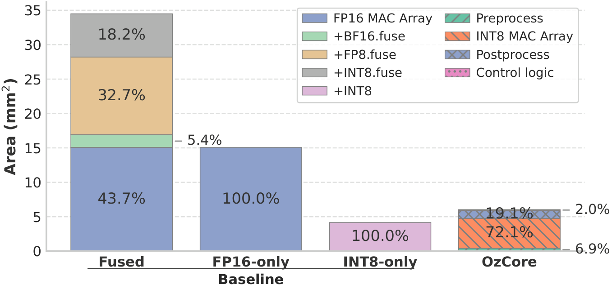
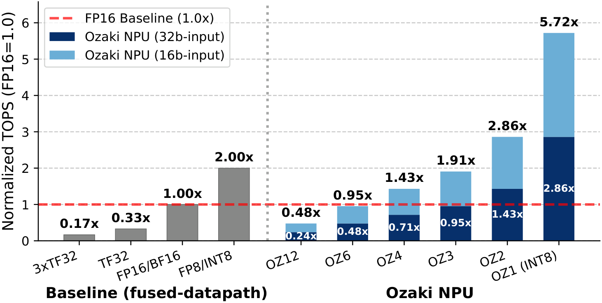
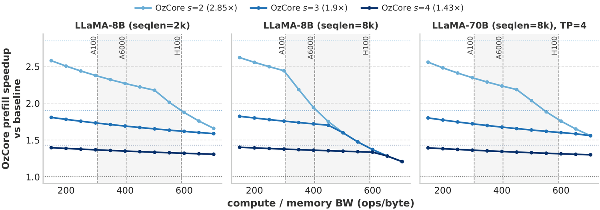
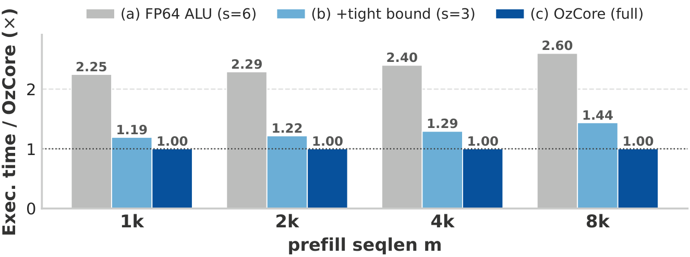

OzCore: INT8 곱셈기로 FP32 정확도를 흉내 내는 칩
MICRO 2026 논문 “OzCore: An Ozaki-Scheme-II-Based GEMM Architecture for Unified Integer and Floating-Point Computation”를 저자 공개 아티팩트와 논문 서지 정보로 풀어 쓴 해설입니다.
한 줄 요약
OzCore는 8비트 정수 곱셈기를 사용해 16비트·32비트 부동소수점 행렬 곱셈을 흉내 내는 하드웨어 구조입니다. 정확도 손실을 거의 내지 않으면서 여러 숫자 형식을 한 벌의 정수 연산 장치로 처리하는 것이 목표입니다.
먼저 밝힐 것: 이 글의 출처와 읽는 범위
이 글은 논문 원문 PDF를 읽고 쓴 것이 아닙니다. 2026년 10월 20일 기준으로 OzCore 논문의 공식 원문은 공개되어 있지 않고, Crossref·OpenAlex에서 논문 DOI도 확인되지 않습니다. 그래서 다음 공개 자료를 근거로 삼았습니다.
- MICRO 2026 공식 프로그램 페이지의 논문 제목·저자·세션 정보
- 저자들이 공개한 MICRO 2026 아티팩트 v1.2 (Zenodo, 저자 코드·데이터는 MIT 라이선스)
- 아티팩트에 포함된 재현 스크립트, 저자가 배포한 수치·그림
따라서 이 글은 논문 전체를 해설한 글이기보다는 “저자가 공개한 아티팩트와 논문 서지 정보를 바탕으로 한 해설”에 가깝습니다. 논문에만 있고 아티팩트에 없는 절·주장·수치는 다루지 않았습니다. 실측값, 저자 데이터 재계산, 해석적 모델 결과는 본문에서 구분해 표시했습니다.
논문 서지
- 제목: OzCore: An Ozaki-Scheme-II-Based GEMM Architecture for Unified Integer and Floating-Point Computation
- 저자: Jihoon Park, Junhee Lee, Howon Lee, Jinsu Kim (서울대학교), Jinseok Kim (Rebellions), Jae-Joon Kim (서울대학교)
- 발표처: IEEE/ACM MICRO 2026 (그리스 아테네), Session 6C “Low-Bit Quantization for LLM Inference”
- 아티팩트: 개념 DOI 10.5281/zenodo.21541963 · v1.2 DOI 10.5281/zenodo.22748465
왜 이런 칩이 필요한가
거대 언어 모델은 대부분 행렬 곱셈을 합니다. 그런데 숫자를 어떻게 표현하느냐에 따라 정확도와 속도가 갈립니다. 부동소수점 FP32나 FP64로 계산하면 정확하지만 느리고 전력을 많이 씁니다. 반대로 8비트 정수(INT8)나 4비트 부동소수점(FP4)으로 계산하면 빠르지만 정확도가 떨어집니다.
여기서 “정확한 계산을 낮은 정밀도 하드웨어로 흉내 내기”라는 아이디어가 나옵니다. 이미 GEMMul8 같은 라이브러리가 이 방식을 GPU에서 구현했습니다. 이를 Ozaki Scheme II라고 부릅니다. 문제는 기존 구현이 대부분 소프트웨어이거나 여러 형식을 한 칩에 밀어 넣느라 회로가 커진다는 점입니다.

results/fig3_fp64_overhead.png(원자료는 A6000 측정 CSV). 재사용: 저자 코드·데이터 MIT 라이선스 기준, 출처 표기. 원문 그림 번호는 논문 기준입니다.
비유: 시계 여러 개로 원래 시간 맞히기
중국인 나머지 정리(CRT)는 초등학교 수학에서 출발합니다. 시계가 하나만 있으면 바늘 위치로 시간을 알 수 있습니다. 시계가 열두 개 있고 시간을 표시하는 주기가 모두 다르면 훨씬 큰 수까지 알아낼 수 있습니다. 예를 들어 7로 나눈 나머지와 11로 나눈 나머지를 동시에 알면 두 나머지의 조합만으로 원래 수를 하나로 특정할 수 있습니다.
OzCore는 이 원리를 행렬 곱셈에 씁니다. 큰 부동소수점 수를 여러 “작은 시계”에 해당하는 나머지로 쪼갭니다. 각 나머지는 8비트 안에 들어갑니다. 8비트 곱셈기는 값싸고 빠릅니다. 나머지별로 곱셈을 끝낸 뒤 나머지들을 다시 모아 원래 정확한 값을 복원합니다. 필요한 시계 개수는 s로 표시합니다. s가 크면 정확하지만 패스가 늘고, s가 작으면 빠르지만 정확도가 떨어집니다.
처리 흐름 네 단계
1단계는 전처리입니다. 입력 행렬(FP16·BF16·FP32 또는 INT8)을 공통 지수로 자리를 맞추고 s개의 나머지로 쪼갭니다. 이때 나머지는 모두 INT8 범위 안에 들어가도록 설계되어 있습니다.
2단계는 계산입니다. 128×128 INT8 곱셈·누적 엔진이 나머지 하나마다 행렬 곱셈을 한 번씩 수행합니다. 누적은 32비트 정수로 합니다. s가 3이면 같은 행렬 곱셈을 세 번, 나머지를 바꿔서 합니다.
3단계는 경로 선택입니다. 입력이 둘 다 INT8이면 원래 정수 곱셈이므로 CRT 복원이 필요 없습니다. 이때는 복원 단계를 건너뛰고 정수 결과를 그대로 내보냅니다. 부동소수점 입력일 때만 복원 경로를 탑니다.
4단계는 복원과 정렬입니다. CRT(개리 알고리즘)로 나머지 조각들을 원래 정수로 합치고 다시 부동소수점으로 맞춰 FP32 출력을 만듭니다. 우회 경로와 복원 경로는 마지막 출력 정렬기에서 합쳐집니다.

구체 예제: 1.5 곱하기 2.25
설명을 위해 두 수에 같은 값 64를 곱해 정수로 만듭니다. 1.5는 96, 2.25는 144가 됩니다. 곱은 13,824입니다.
이제 이 13,824를 실제 모듈러스 값인 255와 253으로 나눠 봅니다. 13,824를 255로 나눈 나머지는 54입니다. 253으로 나눈 나머지는 162입니다. 나머지 (54, 162)만 남기고 원래 곱은 잊습니다. 두 나머지의 조합은 255 곱하기 253, 즉 64,515보다 작은 수 중에서 13,824를 유일하게 가리킵니다. 다시 13,824를 복원하고 64를 두 번 곱한 값 4,096으로 나누면 3.375가 됩니다. 실제로 1.5 곱하기 2.25는 3.375입니다.
실제 하드웨어는 공통 지수 정렬과 반올림이 더 복잡합니다. 위 계산은 원리를 보여주기 위한 단순화된 예제이며 논문 수치가 아닙니다.
s는 정확도와 속도를 맞바꾸는 손잡이
저자가 배포한 데이터로 다시 계산한 논문 표 2를 봅니다. 조건은 WikiText-2 데이터셋, LLaMA-3.1 8B와 70B, 시퀀스 길이 2,048, 141개 샘플, 내부 축소 차원 k=128입니다.
| 모델 | BF16 기준 | OzCore s=2 | s=3 | s=4 | s=6 | s=12 |
|---|---|---|---|---|---|---|
| LLaMA-3.1 8B | 6.244 | 6.363 | 6.242 | 6.243 | 6.244 | 6.241 |
| LLaMA-3.1 70B | 2.810 | 2.933 | 2.809 | 2.809 | 2.809 | 2.810 |
8B 모델에서 BF16 기준값은 6.244입니다. OzCore s=3은 6.242, s=2는 6.363입니다. 70B 모델에서 BF16은 2.810, OzCore s=3은 2.809, s=2는 2.933입니다. s=3이면 원래 정밀도와 사실상 구분되지 않고 s=2는 손실이 눈에 띕니다.
논문 표 4는 왜 s=2가 불안한지 보여줍니다(LLaMA-3.1 8B). b_S라는 시프트 비트 값을 1로 낮추면 s=2에서 PPL이 8.529까지 치솟습니다.
| s | (a) b_S 변화 (b_P=8 고정) | ||||
|---|---|---|---|---|---|
| b_S=1 | 2 | 4 | 8* | 16 | |
| 2 | 8.529 | 6.726 | 6.384 | 6.363 | 6.362 |
| 3 | 6.253 | 6.246 | 6.242 | 6.242 | 6.243 |
| 4 | 6.242 | 6.243 | 6.239 | 6.243 | 6.244 |
| s | (b) b_P 변화 (b_S=8 고정) | ||||
| b_P=1 | 2 | 4 | 8* | 16 | |
| 2 | 6.391 | 6.374 | 6.363 | 6.363 | 6.363 |
| 3 | 6.241 | 6.244 | 6.243 | 6.242 | 6.243 |
| 4 | 6.242 | 6.243 | 6.243 | 6.243 | 6.245 |
반면 s=3과 s=4는 b_S를 1로 낮춰도 각각 6.253, 6.242로 거의 흔들리지 않습니다. 저자 기본값은 b_S=8, b_P=8이며 이 조합에서 s=3이 안전한 타협점이 됩니다.
기존 방식과 무엇이 다른가
첫째, 대상이 다릅니다. FP8·MXFP8·MXFP4는 표현 자체를 낮춰서 저장과 연산을 줄입니다. OzCore는 INT8 하드웨어를 그대로 쓰되 나머지 분해와 복원으로 정확도를 되찾습니다.
| 형식 | 상대 L2 오차(최소~최대) | PPL |
|---|---|---|
| OzCore s=3 | 2.2e-3 ~ 4.2e-3 | 6.24 |
| OzCore s=2 | 2.5e-2 ~ 4.4e-2 | 6.36 |
| MXFP8 (E4M3) | 4.4e-2 ~ 6.9e-2 | 6.51 |
| MXFP8 (E5M2) | 7.4e-2 ~ 9.5e-2 | 6.87 |
| MXFP4 (E2M1) | 1.5e-1 ~ 2.2e-1 | 25.61 |
BF16 입력 128×128 무작위 행렬 곱셈에서 FP64 기준 상대 L2 오차는 OzCore s=3이 2.2e-3에서 4.2e-3 사입니다. MXFP8 E4M3는 4.4e-2에서 6.9e-2, MXFP4는 1.5e-1에서 2.2e-1입니다. 같은 조건에서 PPL은 OzCore s=3이 6.24, MXFP8 E4M3가 6.51, MXFP8 E5M2가 6.87, MXFP4가 25.61입니다.
둘째, 하드웨어 구조가 다릅니다. 기존 Ozaki Scheme II 구현은 FP64 CRT 복원에 의존합니다. OzCore는 이 복원을 정수 쪽으로 옮기고 INT8 곱셈기 하나로 모든 형식을 처리하는 구조를 제안합니다. 아래 그림 5의 무작위 행렬 실험에서 OzCore는 같은 s에서 기존 OS-II 기준선보다 오차가 낮습니다.

results/fig5_vs_os_ii.png. 아티팩트 기준 계산 깊이는 “recompute”(배포 데이터로 재계산)입니다. 재사용: 저자 코드·데이터 MIT 라이선스 기준, 출처 표기.
셋째, 다중 형식 융합의 비효율을 피합니다. 여러 형식을 한 MAC 배열에 밀어 넣는 융합 설계는 형식이 늘수록 면적 대비 처리량이 떨어집니다. 저자 계산으로 FP16 단독 대비 모든 형식 융합 시 TOPS/mm²가 0.21배에서 0.47배로 줄어듭니다. OzCore는 대신 INT8 배열 하나에 형식 변환 부담을 전처리·후처리로 옮깁니다.
성능 주장과 그 근거
저자 아티팩트의 하드웨어 수치는 28나노 FDSOI 공정, 300 MHz, 128×128 INT8 배열 기준입니다.
| 구성 요소 | 면적 (mm²) | 전력 (W) |
|---|---|---|
| 전처리(preprocess) | 4.961 | 0.329 |
| SIMD 엔진(INT8 곱셈·누적) | 52.147 | 3.904 |
| 후처리(postprocess) | 13.8 | 1.143 |
| 제어 논리 | 1.428 | 0.241 |
| 합계 | 72.3 | 5.617 |

results/fig10_area_breakdown.png. 계산 깊이는 “replot”(정제된 합성 면적 재배치)이며 재합성이 아닙니다. 재사용: 저자 코드·데이터 MIT 라이선스 기준, 출처 표기.

results/fig11_normalized_tops.png. 계산 깊이는 “replot”(정제 합성 밀도 재배치). 재사용: 저자 코드·데이터 MIT 라이선스 기준, 출처 표기.
그림 13은 시스템 수준 전망을 계산한 모델입니다. A100·A6000·H100의 계산 대 메모리 대역폭 비율별로 동일 면적에서 프리필 처리량이 얼마나 늘어나는지 계산합니다.

results/fig13_system_prefill_ridge.png. 계산 깊이는 “model”(해석적 루프라인 + 정제 밀도 입력). 재사용: 저자 코드·데이터 MIT 라이선스 기준, 출처 표기.

results/fig16_fp64_3point.png. 계산 깊이는 “model”(사이클 폐쇄형 모델 + 정제 면적 예산). 재사용: 저자 코드·데이터 MIT 라이선스 기준, 출처 표기.
측정값은 그림 3뿐입니다. 예를 들어 1024×14336×4096 GEMM에서 네이티브 FP64가 5.297 ms, fast 모드 s=2가 2.767 ms, s=3이 3.742 ms였습니다. 1024×128256×4096에서는 네이티브가 45.936 ms, s=2가 24.516 ms였습니다. 이 값은 기준선 소프트웨어 구현을 GPU에서 잰 것이며 OzCore 칩 측정이 아닙니다.
한계와 검증하지 않은 것
- 논문 원문 PDF를 읽지 못했습니다. 위 내용은 공개 아티팩트와 서지 정보 범위 안에 있습니다.
- 면적·전력 수치는 NDA 28나노 셀 라이브러리 합성에서 나온 값입니다. 아티팩트는 정제된 수치와 재작성 스크립트만 공개하며 합성을 다시 돌리려면 라이선스가 필요합니다. 이 글에서 재합성하지 않았습니다.
- 그림 13과 16은 해석적 모델이지 실측 가속비가 아닙니다. 그림 3만 A6000 실측 기록입니다.
- 표 2·4·6은 저자가 배포한 데이터를 CPU에서 다시 계산한 값입니다. 논문 표기와 0.001에서 0.003 정도 차이가 날 수 있습니다. 표 4와 표 2·6은 재계산했고, 표 5(FP8·GPTQ 체크포인트)와 표 3(제로샷 정확도)은 데이터가 없어 재현하지 않았습니다.
- 저자 아티팩트는 NVIDIA RTX A6000에서 검증됐습니다. H100은 ragged batched INT8 attention GEMM에서 알려진 실행 문제가 있고 Blackwell은 검증되지 않았습니다.
- OzCore 칩 자체의 실리콘 측정값은 공개되지 않았습니다.
정리
OzCore의 핵심 주장은 세 문장으로 줄어듭니다.
- 정확한 부동소수점 행렬 곱셈을 INT8 곱셈기로 대신할 수 있다.
- 필요한 나머지 개수 s를 조절하면 정확도와 비용을 맞바꿀 수 있고 s=3이 좋은 타협점이다.
- 형식별 MAC 배열을 여러 개 두는 대신 INT8 배열 하나와 전처리·후처리로 통합하면 동일 처리량 기준 면적 효율이 좋아진다.
다만 이 세 주장 중 실측으로 확인된 것은 기준선 소프트웨어의 GPU 단계별 시간뿐입니다. 칩 면적과 시스템 가속은 저자의 합성 수치와 해석적 모델에 기반합니다. 논문이 공개되면 원문의 실측 절과 비교해 다시 확인할 필요가 있습니다.
출처
- MICRO 2026 공식 프로그램(논문 제목·저자·Session 6C): microarch.org/micro59/program/
- 서울대학교 VLSI 연구실 게재 목록(MICRO 2026, Oct. 2026): vlsi.snu.ac.kr/publications/
- 저자 공개 아티팩트(MICRO 2026 OzCore artifact, v1.2, MIT): 개념 DOI 10.5281/zenodo.21541963 · v1.2 DOI 10.5281/zenodo.22748465
- Ozaki Scheme II 원 방법론(GEMMul8 기반, 참고): Katsuhisa Ozaki, Yuki Uchino, Toshiyuki Imamura, “Ozaki Scheme II: A GEMM-oriented emulation of floating-point matrix multiplication using an integer modular technique”, arXiv:2504.08009
그림과 표의 권리: 사용한 그림·표 수치는 저자가 MIT 라이선스로 공개한 아티팩트 v1.2의 코드·데이터에서 재생성·재계산한 결과물이며, 각 캡션에 원문 그림 번호와 출처를 표기했습니다. 논문 도판 자체의 저작권은 발표처(ACM/IEEE)에 있으며, 이 페이지는 논문 PDF 도판을 복제하지 않고 저자 공개 아티팩트 산출물을 사용했습니다. 개념도 1은 이 해설자가 새로 그린 것입니다.